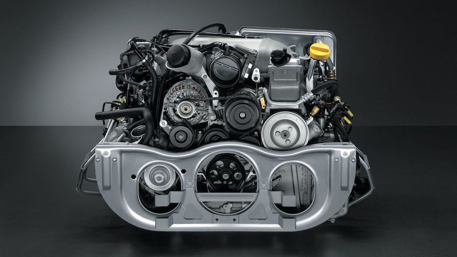
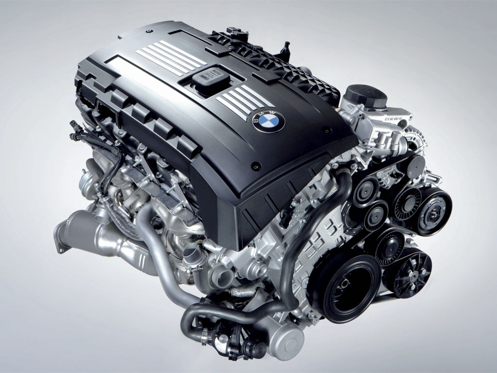
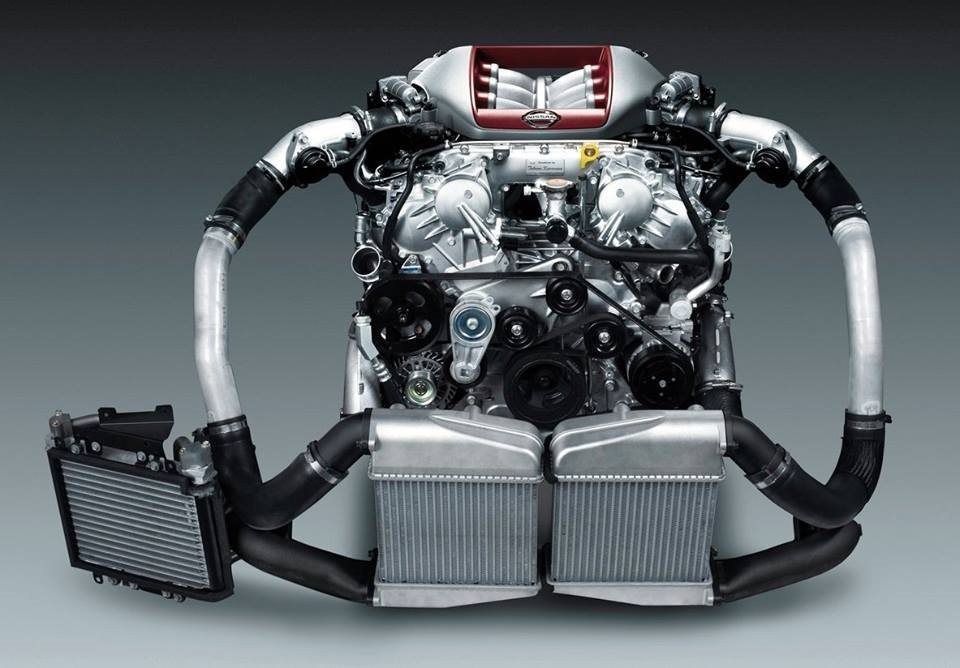

-
3.8 (Aspirado, Turbo ou Biturbo) Boxer "Mezger" da Porsche

O motor Mezger, como ficou conhecido esta geração de despedida, equipou o 911 Turbo 997 Mark I e foi até a última evolução dos 911 GT2 e GT3 desta mesma geração. Com bloco arrefecido a líquido derivado diretamente do motor de Le Mans do 911 GT1, com direito a cárter seco real, seus cabeçotes compartilham vários elementos de projeto empregados no épico 959. Outra característica típica do mundo das corridas era o superdimensionamento: é ele que faz o 3.6 Mezger o motor a ser procurado para quem quer um Porsche 911 Turbo de preparação extrema, ante o seu sucessor, o 3.8 DFI. Por fim, há quem diga que os Mezger roncam de forma mais agressiva e orgânica. E não são poucos os que o dizem.
-
N54 3.0 Biturbo em Linha da BMW

O primeiro fruto da vaga reservada aos modelos de alto desempenho da BMW para o N54, foi o BMW 1M (descontando o BMW Z4 35i, que não é um ///M). Ao passar pelas mãos dos engenheiros da divisão ///M, o N54 para o 1M passou a render 340 Hp a 5900 rpms e 45,8 Kgfm de torque logo a partir de 1500 rpms, mantendo-se constante até 4500 rpms. Não vamos nos esquecer do overboost, que eleva o torque momentaneamente (por cerca de 5 segundos) a 50,9 Kgfm toda vez que você der curso até o final do acelerador.
-
VR38DETT 3.8 Biturbo em V do Nissan GTR R35

O Nissan GT-R tem um único motor e este é o VR38DETT, um propulsor V6 3.8 litros, com bloco usinado em alumínio, assim como cabeçotes com duplos comandos, tendo quatro válvulas por cilindro.
Nesse motor, o que chama atenção é que apenas as válvulas de admissão possuem variação de abertura e fechamento. Os cilindros possuem pulverização de óleo especial para alta e baixa fricção.
Tem ainda os dois turbocompressores integrados nos coletores de escape integrados aos cabeçotes, de forma a reduzir o peso e o tamanho do propulsor.
Esses dois turbos são fornecidos pela IHI, sendo um conjunto com intercooler e conversores catalíticos individuais, reduzindo a emissão de poluentes, mas tem injeção eletrônico multiponto indireta.
Com 3.799 cm³, o VR38DETT tem 572 cavalos e 64,3 kgfm, mas com variantes que vão de 530 a 608 cavalos, dependendo da versão e edições especiais
Guia do Cabeça de Petróleo
Pra você que pensa que carro que nunca deu problema, não tem historia!